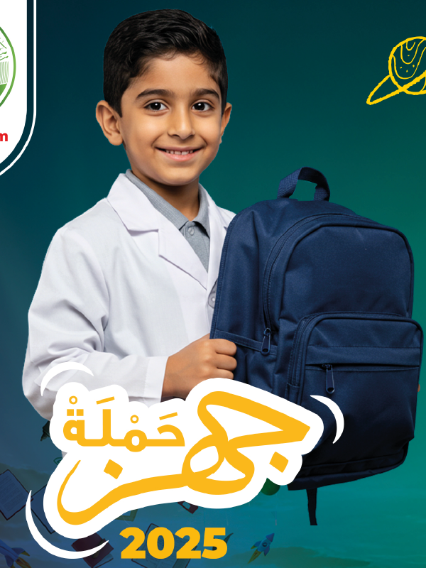
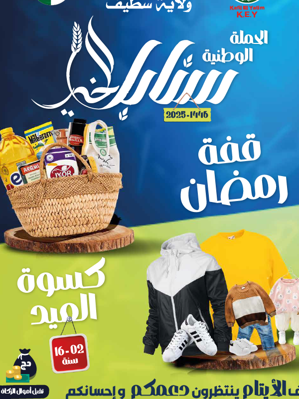

حملاتنا
أبرز حملاتنا الخيرية

حملة جهز
تحت شعار "محفظة لكل يتيم"، تهدف إلى توفير كافة المستلزمات المدرسية لصالح أبنائنا المتمدرسين، من أجل دعمهم طيلة مشوارهم الدراسي. تضمن الحملة توفير الكتب والقرطاسية والأدوات المدرسية، بالإضافة إلى الزي المدرسي.
تعرف على المزيد
حملة القلوب الدافئة
وهي حملة تضامنية شتوية، موجهة للأيتام والأرامل خاصة القانطين بمناطق الظل والمناطق النائية. تهدف إلى توفير الدفء في بيوتهم من خلال توزيع الأغطية، الملابس الشتوية، والسخانات.
تعرف على المزيد

حملة سنابل الخير
وهي حملة موجهة لدعم الأرامل والأيتام بالطرود الغذائية طيلة شهر رمضان المبارك، بالإضافة إلى كسوة العيد. تهدف إلى توفير كل ما يحتاجونه من مواد أساسية لرسم البهجة على وجوههم في هذا الشهر الفضيل.
تعرف على المزيد
حملة عيدنا تكافل
هي حملة تهدف إلى جمع وتوزيع الأضاحي واللحوم لفائدة أسر الأيتام خلال عيد الأضحى المبارك، مما يساهم في إدخال الفرحة عليهم ومشاركتهم بهجة العيد.
تعرف على المزيد